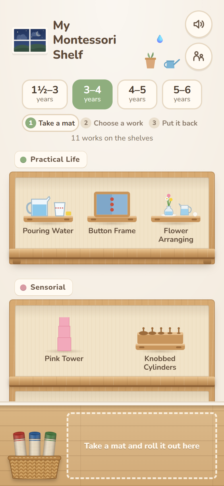
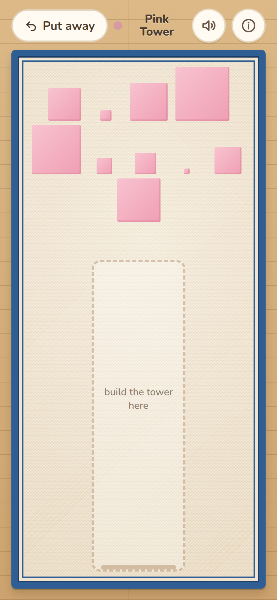
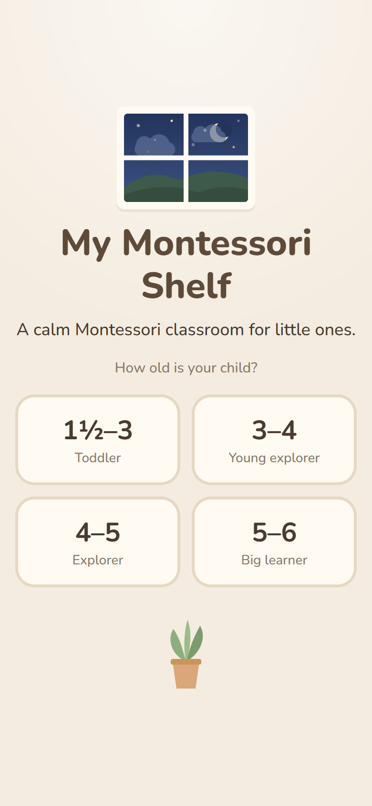

A calm Montessori classroom for little ones
Take a mat. Choose a work from the wooden shelf. Work with it, then put it back. My Montessori Shelf brings the rhythm of a real Montessori classroom to your phone or tablet: quiet, unhurried, and made for small hands.


Just like a real Montessori classroom
Children learn order, concentration and independence through a simple cycle they repeat every time. The app follows it exactly.
Take a mat
The child carries a rolled mat from the basket and unrolls it on the floor. One mat for one work.
Choose a work
Trays sit on wooden shelves by area: Practical Life, Sensorial, Language, Mathematics, and Culture & Science.
Work with it
The material shows mistakes by itself. A piece that doesn't fit glides gently back. No scores, no timers, no "wrong!"
Put it back
The tray goes back to its own place on the shelf and the mat is rolled up, ready for the next child.

The right works for each age
Pick your child's age and the shelves fill with the works a Montessori guide would present at that stage.
- Spooning Beans
- Jars and Lids
- Washing Hands
- Peeling a Banana
- Shape Puzzle
- Colour Box 1
- Ring Stacker
- Object Permanence Box
- Big and Small
- Object to Picture
- Animal Sounds
- Pouring Water
- Button Frame
- Flower Arranging
- Pink Tower
- Knobbed Cylinders
- Sound Cylinders
- Red Rods
- I Spy
- Sandpaper Numerals
- Land, Air and Water
- Day and Night
- Setting the Table
- Sewing Card
- Colour Grading
- Geometric Cabinet
- Sandpaper Letters
- Pink Object Box
- Number Rods
- Spindle Box
- Cards and Counters
- Puzzle Map: Continents
- Life Cycle of a Butterfly
- Little Shop
- Binomial Cube
- Moveable Alphabet
- Noun and Verb
- Golden Beads
- Bead Stair
- Hundred Board
- Teen Board
- Snake Game
- Telling Time
- Parts of a Flower
- Solar System
Notes like a Montessori teacher keeps
Press and hold the 👪 button to open the parents' corner. Children can't wander in by accident.
Presented, practising, mastered
Each work has a plain-language note on where your child is, the longest focus and how often they repeat it.
What comes next
See the next step in the Montessori sequence, so you always know what to offer after a work is mastered.
Try it at home
Every work comes with a way to do it with everyday things: beans and a spoon, jars, buttons, a jug of water.
This week
Works finished, minutes of focus, days in the classroom and the most-loved work, at a glance.
Gentle session limits
Choose 10 to 30 minutes. When time is up, your child finishes the work in hand and puts it back, then the classroom rests.
A living classroom
The window follows the real time of day and weather. A plant grows when it's watered and droops (never dies) if forgotten.
Our promise to families
Help us bring the shelf to more families
We're inviting a small group of parents and Montessori teachers to try the app on Google Play before it opens to everyone. Email us the Gmail address you use on your Android phone or tablet, and we'll send you the Play Store test link. It installs and updates like any other app.